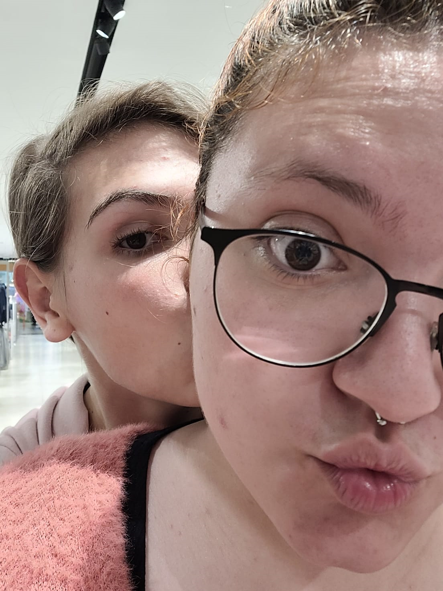
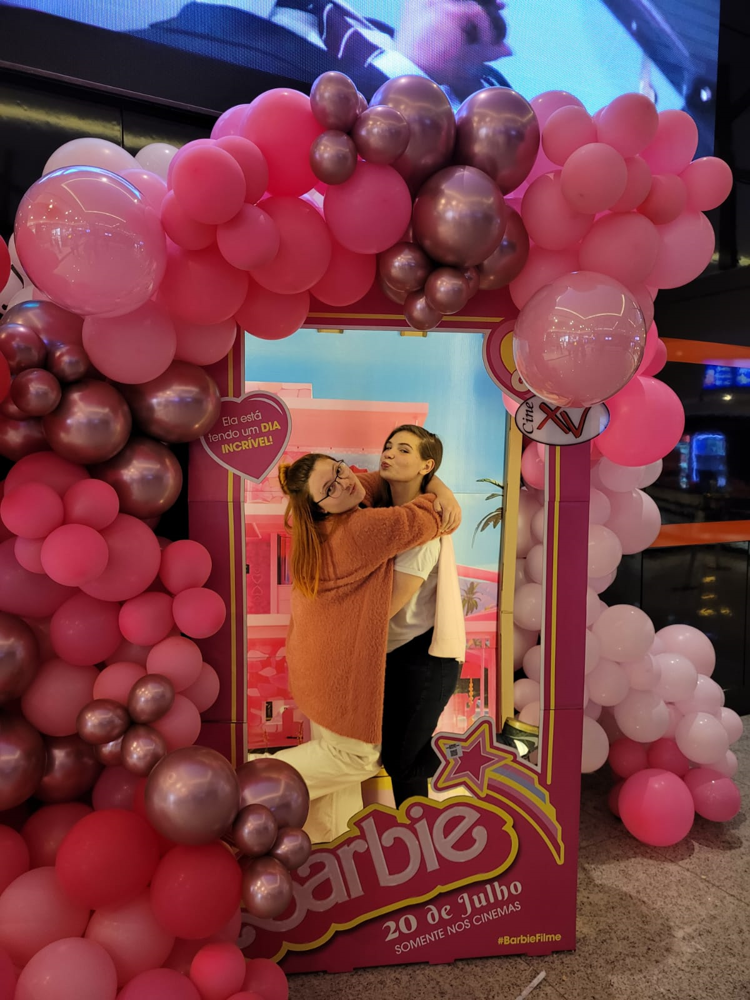
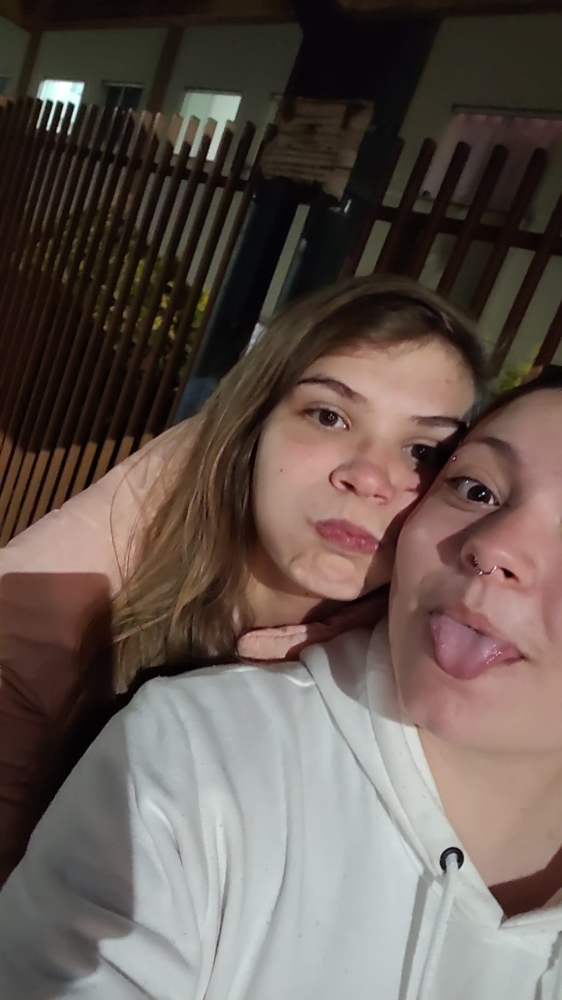
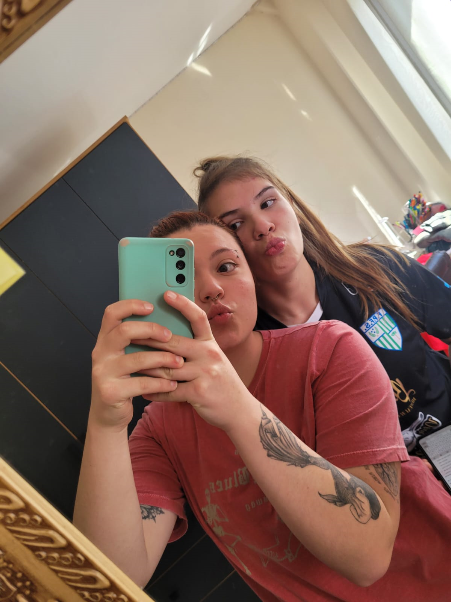
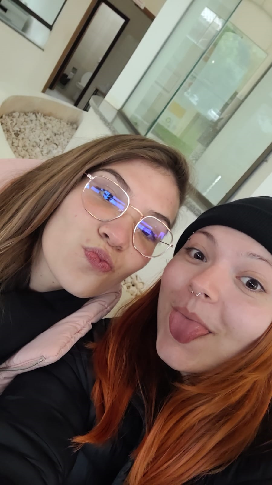
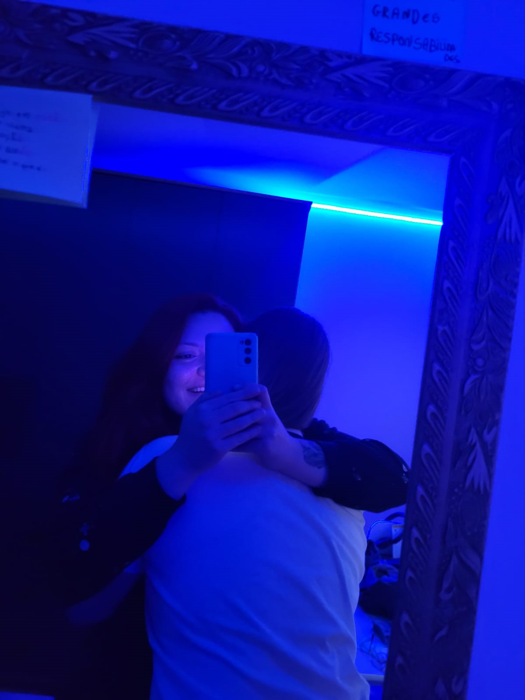
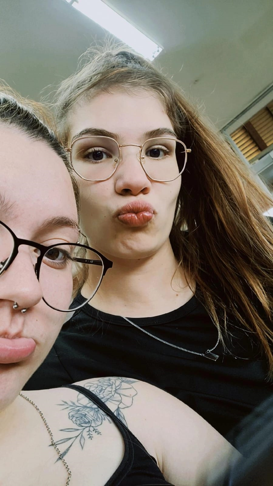

ALGUNS TRECHOS DE ALGUMAS MÚSICAS QUE ME LEMBRAM VOCÊ (PS CLIQUE NA FOTO)
|  | "Incomum - Luccas Carlos" "Mulher indecifrável, não há nada parecido, ela é código binário, pirâmide do Egito mulher indomável, um tesouro perdido valor inestimável e o seu mapa tá comigo Diz o que cê fez pra me prender qual feitiço que você me jogou nessa armadilha feita por você ela me suga amor Não tem como te decifrar incomum em cada curva sua inconfundível só sei que me pegou de um jeito incomum" |
Quando você chegou na minha vida eu basicamente não sabia te decifrar, não sabia o que você queria da sua vida, uma hora você me tratava bem, depois falava que não queria nada... Conforme o tempo foi passando, eu me vi mais encantada por você, mais presa nos seus olhos e no seu sorriso e eu simplismente não conseguia mais me afastar de você. |
|---|
|  | "Amor de fim de noite - Orochi" "Nossos corpos sempre na conexão Nossos corpos sabem da nossa intenção 'Cê chegou bagunçando a mente toda Eu não consigo mais pensar em outra" A gente se parece no jeito de agir E o seu sorriso tímido me faz sorrir Eu não aguento mais viver pensando Em quando a gente vai se ver de novo Pra eu te ter de volta na minha cama, de calcinha, com a minha blusa A nossa chama não se apaga nem com um dia só de chuva Ninguém nunca entendeu como você consegue ser assim tão linda Eu não aguento mais viver pensando em ver você Deixa eu mudar essa nossa história hoje Vamos ser mais que amor de fim de noite Eu posso fazer tudo, ser melhor do que da última vez E fazer bem melhor do que seu ex um dia te fez | Amor, você definitivamente chegou bagunçando a minha mente, bagunçou tudo que eu achei que ia viver na faculdade, bagunçou meus planos e mais, bagunçou o conceito que eu tinha sobre amor... A gente não só se parece no jeito de agir, mas de pensar, nossos valores, nossos ideais, tudo bate. Como já dito anteriormente seu sorriso é uma droga pro meu coração, e eu conto as horas pra ver ele de pertinho, pra sentir seu cheiro, seu toque. Deixa eu mudar nossa história? Posso ser mais que seu amor de fim de recepção de calouros? Quem sabe o amor da sua vida? |
|---|
|  | "Planos - BK" "Como é bom te olhar nos olhos Planejar o futuro, planejar os nossos Sem pensar nos próximos episódios Vivemos numa infinita metragem, baby Você fala pra eu nunca te esquecer Mas olha só pra você Como me esquecer de você? Não quero promessas, eu quero viver E poder contar com você a grana que nós tiver Te olhando deitada na cama e o sol adora seu corpo
Da janela do quarto eu me sinto iluminado, abençoado
Tenho você por perto Nunca me senti tão completo Nunca me senti tão seguro Perco o medo do fim do mundo Gosto tanto de ti, mó sensação que eu não preciso Mentir, talvez não menti tanto Nas suas pernas meditando Esqueça o que eu falei sobre mentir, tava brincando." |
Essa eu com certeza poderia te dedicar inteira, mas escolhi alguns trechos que mais me identifico, primeiramente eu amo planejar nosso futuro, sempre que to rezando pelo nosso relacionamento meu coração fala mais alto e eu começo a imaginar nossa casa, nossos filhos, é mais forte que eu já kkkkkk Brenda, como esquecer de você? Como esquecer da mulher que devolveu meu brilho, que me fez acreditar no amor de novo, que me faz batalhar diariamente pelos meus sonhos? Definitivamente não tem como eu te esquecer... Sempre que abro a pasta com as nossas fotos no meu celular eu viajo pela sua beleza, perco horas olhando pra você, seja pessoalmente ou por fotos. Eu nunca, nem nos meus outros relacionamentos, nunca me senti tão segura, tão completa, tão amada, tão respeitada, eu amo o fato de poder ser todas as minhas versôes quando estou com você, sem medo de ser julgada... |
|---|
|  | "Sabe - Ana Gabriela" "Sabe, até que agora eu to me acostumando Te olhando peço que nunca acabe O que eu mais temia aconteceu Te entreguei meu eu Eu te apresentei todas as minhas versões E pelo visto eu não te assustei Dei tantos motivos, avisos, verdades sem filtro Deixei bem claro que nem eu me entendo Mas ela nem liga, entende Até as paranoias que fizeram todos saírem correndo" |
Amor, quando a gnt saiu pela primeira vez, eu reparei, lá no itts, o quão fácil seria me apaixonar por você, e eu confesso que eu fiquei com mto medo, mas mto medo mesmo... Fiquei com medo de de afastar com meus traumas, meus problemas, principalmente depois que a gnt começou a se envolver mais, pq sinceramente, já ouvi de uma pessoa que ela me amava, mas que eu era muito problemática pra ela ficar do meu lado, que era impossível conviver comigo e entender todos os meus traumas. E você não só convive e entende os meus traumas, mas me ajuda diariamente a superar eles, com o seu jeitinho meigo e essa luz do Espírito Santo que te acompanha você me mostrou que eu mereço sim ser amada e que tá tudo bem eu ter passado tudo que eu passei, pq isso me fez ser a mulher foda que eu sou hoje. |
|---|
|  | "Olhos Castanhos - Geovanna Jainy" "Senti meu coração bater mais forte O meu corpo arder E naquele momento eu sabia Que meu amor era você Eu sinto calafrios ao te olhar
Eu sinto arrepios ao ouvir você falar
Quando 'to com você esqueço tudo
Você literalmente é meu mundo
Quando seus lábios tocaram os meus
Mergulhei nos desejos mais profundos da sua alma
E consegui sentir todo amor que você carregava
Eu quero ser tua casa Eu quero ser tua morada Quero amanhecer todo dia ao seu lado Quero dormir no seu abraço Eu quero ser tua casa Eu quero ser tua morada Quero amanhecer todo dia ao seu lado Quero dormir no seu abraço" |
Sim, eu sinto calafrios quando eu te vejo, minha pupila dilata, eu me sinto uma adolescente que ta apaixonada pela primeira vez. Além disso, os teus olhos são como um universo, eu poderia ficar horas e horas olhando pra eles e simplismente não consegueria analisá-los por completo...Eu quero passar o resto da minha vida ao seu lado, no seu abraço (que pasme é o melhor abraço do mundo), so seu chamego (que também é o melhor do mundo). Você é a pessoa mais linda que eu conheço, e eu não to falando só de beleza física (apesar de eu te achar a mulher mais gata do mundo), tua beleza pra mim sempre foi seu caráter, sua bondade, sua meiguice, seu carinho, seus valores, a maneira com que você cuida e se importa com os seus. |
|---|
ESSA MÚSICA EU TE DEDICO INTEIRA, NÃO PRECISA DE EXPLICAÇÃO POIS A LETRA DELA DIZ TUDO
|  | "Turning Page - Sleeping at last" "I’ve waited a hundred years
If I had only felt the warmth within your touch
Your love is my turning page
I surrender who I’ve been for who you are
Though we’re tethered to the story we must tell
|
Eu esperei cem anos
Se eu tivesse apenas sentido o calor em seu toque
Seu amor é minha virada de página
Eu rendo quem tenho sido por quem você é
Embora estejamos amarrados à história que devemos contar
|
|---|
ESSA MÚSICA EU TE DEDICO INTEIRA,MAS APESAR DA LETRA DIZER TUDO, VOU ACRESCENTAR ALGUMAS INFORMAÇÕES
|  | "2 much - Justin Biber " "Injustice anywhere is a threat to justice everywhere
Say: Love you, under my breath
Don't wanna close my eyes, I'm scared I'll miss too much
Don't wanna close my eyes, I'm scared I'll miss too much
Love the way you love your mom
Say: Love you, under my breath
Don't wanna close my eyes, I'm scared I'll miss too much
|
A injustiça em qualquer lugar é uma ameaça à justiça em todo lugar
Eu falo que te amo, baixinho
Não quero fechar meus olhos, estou com medo de perder muito
Não quero fechar meus olhos, estou com medo de perder muito
Amo o jeito que você ama sua mãe
Eu falo que te amo, baixinho
Não quero fechar meus olhos, estou com medo de perder muito
|
|---|
vamos lá amor, essa música eu escutei pela primeira vez não faz muito tempo
a primeira estrofe dela já me lembra os primeiros dias, que eu não sabia se estava deixando claro o suficiente que eu te queria, mas desde o momento que vc me seguiu eu te quis...
Quando você solta seu cabelo, mais especificamente quando ta fazendo o rabo, ou quando tá dançando comigo e com o cauby sem ligar pra mais nada
é nesses pequenos momentos que eu tenho certeza que estou no lugar certo e com a pessoa certa
Várias e várias vezes eu ja me peguei dizendo que te amo bem baixinho, ou na minha mente, e é sempre em uns momentos muito específicos mas ao mesmo tempo tão simples, literalmente qualque coisa boba que vc faz eu penso "caramba como eu amo essa mulher"
teu nome é música para os meus ouvidos, e quando vc deita no meu peito, seja depois de um momento difícil ou só porque vc quis deitar eu simplismente não consigo acreditar que é real, porque nem nos meus melhores sonhos eu amei alguém como você...
eu ja perdi a conta de quantas vezes ignorei meu cansaço e meu sono pra conversar com você, e pasme não me arrependi nenhuma vez
quando eu não estou com você eu me sinto perdida, eu sei que parece clichê, mas sinceramente eu não me lembro de como eu era antes de amar você, parece que vc sempre esteve aqui o meu coração, eu só não tinha te encontrado fisicamente (ainda)
dois segundos sem você definitivamente parecem dois meses
nenhum espaço de tempo com você seria suficiente, então vamos começar com o clichê "para sempre"
eu sou facinada pelo jeito que você ama sua mãe e pela relação que vocês tem, você nunca mede esforços para ajudar as pessoas, ta sempre dando o seu melhor em todos os quesitos e ainda tem tempo para me amar, para cuidar de mim, me fazer a mulher mais feliz do mundo...
eu ainda revivo o momento em que eu conheci minha maior benção (você), eu rezei tanto, mas tanto pra Deus me mandar alguém maravilhoso, mas ele me deu mais, ele me deu você, a pessoa mais bondosa, mais amorosa, mais incrível que eu conheço.
sabe o que é mais engraçado? eu escrevi tudo isso e ainda não descrevi 1% do meu amor por você
obrigada pelos 3 meses mais incríveis doas meus 18 anos de vida